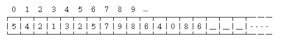

Big Number
程度★ 難度★★
Big Number
我個人覺得「Big Number」這個英文辭彙，聽起來一點都不學術，何況，一般來說我們只討論整數的部分。另外還有一種稱呼是「Big Integer」，這聽起來就正式多了。
言歸正傳。大數就是很大的數字，大到無法以一個簡單的變數型態儲存這個值。
一般來說，int這個變數型態，記憶體大小為32 bit，可以儲存數值範圍為-2^31到2^31 - 1的整數，大約是1後面再接九個零；而long long這個變數型態是64 bit的，可以儲存數值範圍為-2^63到2^63 - 1的整數。另外還有unsigned這個關鍵字，它能讓原本的變數型態能夠存入更大一點的正整數。
雖然int、long long的數值大小已經夠用了，但是人的慾望是無止盡的，總是想讓電腦能夠處理更大的數字、算得更精準。於是大數的技術就這樣產生了。
資料結構
要讓電腦存放這麼大的數字，有個好方法就是使用陣列。陣列有很多格子，一個格子存一個數字；只要宣告1000格大小的int陣列，就可以存1000位數了！至於一個int變數，充其量也不過十位數而已──陣列能存放的數值大小，和int相比之下，實在是多很多很多。
通常我們習慣將低位數放在索引值（index）比較小的位置，高位數放在索引值比較大的位置。假設要存放680468975231245。
每個人對陣列的思考模式不一樣，像這裡就是由左至右的，另外也有人覺得陣列是由右至左、由上至下、彎彎曲曲的、……。要怎麼思考都是可以的，一以貫之就好囉。
陣列右端劃上橫線的格子，通常我喜歡存0進去，這樣子做運算的時候會比較方便；如果將橫線的部分設成-1，在運算時會出現點麻煩，所以我不喜歡、也不建議這麼做。
大數的各種功能
設計好了資料結構之後，接下來便要開始設計大數的各種功能，例如說顯示大數，以及大數的四則運算。
為了讓初學者能夠清楚了解大數運算的方式，以下的程式碼舉要治繁，而不修邊幅。各位了解箇中道理之後，可以自行添加修改，讓程式碼更美觀。
顯示大數
在螢幕上印出大數可以這麼做。
如果這個大數有可能是零，就得加個幾行程式碼。
比較大小
比較哪個數字比較大。
加法運算
大數的四則運算不會很困難。這裡提供大數加法的粗略程式碼，希望能一目瞭然。
大數的運算有個有趣的地方，就是運算時不用立即進位，可以後來再去一口氣進位。這件事情值得細想。
UVa 10035
減法運算
這裡繼續提供大數減法的粗略程式碼。
乘法運算
大數乘法的粗略程式碼。我一定要強調它是粗略的。
至於大數乘以int是比較容易的。
UVa 338 10106
除法運算
大數除法可直接使用長除法。還滿複雜的。程式碼就隨便寫寫囉！
商數範圍是零到九，所以必須一一嘗試。可以利用高位數相除來估計商數的範圍，便不必一一嘗試。這裡不加說明。
至於大數除以int是比較容易的。
開平方根運算
大數開平方根可利用直式開方法。【待補文字】
UVa 10023
改進資料結構
一個欄位只存一個數字有點浪費。
int的範圍約為十位數字，一個欄位其實能夠存入九個位數的。一個欄位可存九個位數，那麼1000格的陣列，便可從原來的1000位數，搖身一變成為9000位數；一個欄位可存九個位數，若要表示1000位數，只需要112格的陣列就可以了。這個新想法，相當的節省空間，運算次數也會隨之減少。

不過，如果一個欄位存了很多位數，會對運算造成什麼影響呢？
從最簡單的加法、乘法開始思考好了：
首先，進位會受影響。如果一個欄位存了兩位數字，那麼做進位時，要每到100才能進位。
第二，進位後會溢位（overflow）嗎？進位會讓隔壁的欄位增加一些數字。如果隔壁的欄位原本就有一個很大的數字，那麼它加上進位的數值之後，會不會產生溢位？
第三，乘法是將某兩個欄位相乘，加到另一個欄位上。兩個欄位相乘，如果他們各是8位數，相乘之後至少也有15位數，這遠超過int的上限了，怎麼可能存進一個int之中呢？
或許還會有很多的問題需要考慮。
雖然問題重重，但是也並不代表一個欄位還是只能存一個數字吧？一個欄位存個兩三位，應該不成問題吧？這些問題就留給大家思考，在此不加贅述。
UVa 288 10220 10814 10925 748
GMP
GMP是一個C/C++大數運算函式庫，相當實用，讀者可上網搜尋之。